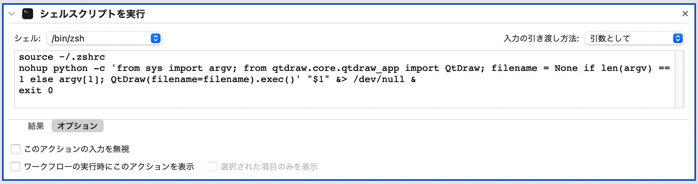

Install QtDraw (and MultiPie)#
QtDraw can be installed from PyPI using pip on Python >= 3.9:
Requirements:#
Installation#
Construct Python & LaTeX environments
Install Python
[MacOS or Linux] Add path for LaTeX and Python in .zshrc.
export PATH=/Library/TeX/texbin:$PATH export PATH=/opt/homebrew/opt/python@3.12/libexec/bin:$PATH
If a virtual environment (e.g.
~/.venv) is used, set PATH to.venv/binprior to global one as well.Restart shell
[MacOS] Install Homebrew
$ brew install python@3.12
[Windows] Install PowerShell & Python https://www.python.jp/install/windows/install.html
Install LaTeX: TeX Live
Install relevant modules (all are installed just by installing qtdraw, thus this procedure can be skipped)
$ pip install -U pip $ pip install Cython $ pip install numpy $ pip install sympy $ pip install scipy $ pip install matplotlib $ pip install click $ pip install PySide6 $ pip install pyvista $ pip install pyvistaqt $ pip install ipython $ pip install black # format python and .qtdw files $ pip install gcoreutils $ pip install pandas # need for pymatgen $ pip install pymatgen # to read .cif, .vesta, and .xsf files $ pip install multipie # if use MultiPie extension
Install QtDraw
$ pip install qtdraw
[Linux: Ubuntu 22.04.4 LTS on WSL2]
export QT_QPA_PLATFORM=xcb # add in .bashrc sudo apt update sudo apt upgrade # just in case sudo apt install libxcb-cursor0
Associate QtDraw file (.qtdw) to the application
It is useful to associate with the following application with
.qtdw,.cif,.vesta, and.xsfextensions.[MacOS]
Download and extract QtDraw_MacApp.zip, and move it into Applications folder
Associate extensions with
QtDraw.app
(Note)
QtDraw.appis created by Automator with the following script:source ~/.zshrc if [ -z "$1" ]; then nohup qtdraw &> /dev/null & else nohup qtdraw "$1" &> /dev/null &

[Windows]
Associate extensions with
qtdraw.exeinScriptsfolder or QtDraw_WinApp.zipScriptsis usually inC:\Users\<username>\AppData\Local\Programs\Python\Python<version>\
Shell commands#
qtdraw [filename]: Open QtDraw file.conv_qtdraw2 [ver1_file.qtdw]: Convert Version 1.qtdwfile into this version (Version 2).